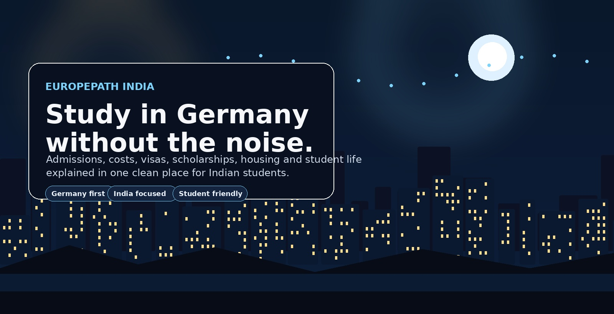

Roadmap
From Class 12 to Germany
Understand the general path, the documents you will keep hearing about, and the order in which things usually happen.
- Eligibility pathway overview
- Language and application planning
- Timeline that reduces chaos
EuropePath India is built for Indian students who want the practical route, not a maze of copy-paste advice. Find structured guidance on universities, scholarships, visas, living costs, housing, and student life, all in one place.

Clear information, organized like a real student portal.
Understand the general path, the documents you will keep hearing about, and the order in which things usually happen.
See the major cost buckets students need to think about before landing in Germany.
A clean guide to scholarship types, what they usually cover, and how to read the fine print.
Germany keeps showing up in student conversations for good reasons. Public universities are widely known, the academic ecosystem is strong, and the country has a deep engineering, research, and technical education culture. It is not the only path, but it is one of the most practical ones for students who want value and structure.
It is written like a guide, not like a fake brochure. Each page has actual explanations, examples, and next steps. That means it feels like a living resource rather than a stack of empty boxes.
These pages carry the main weight of the website.
The main roadmap page. It explains the route, the broad steps, and the decisions that matter most first.
Featured institutions, what they are known for, and how to think about fit rather than chasing random names.
A practical checklist for the student visa path, with the usual document and planning pieces.
Short answers that stop the confusion from multiplying.